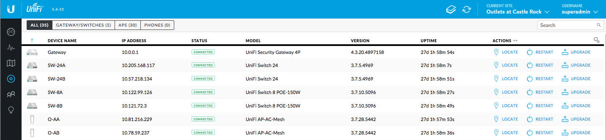
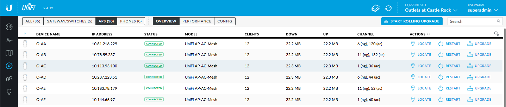
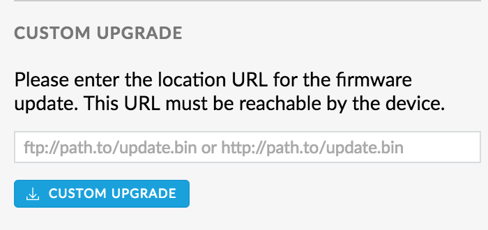

Существует три метода обновления или внесения изменений:
Примечание. Если Вы собираетесь использовать версию, которая отличается от поставленной по умолчанию, сначала отключите автоматическое обновление прошивки в контроллере.
Простое обновление прошивки до новой версии
Простое обновление прошивки устройства до самой последней версии можно выполнить в разделе контроллера «Devices». Кнопка обновления появится в столбце «Actions» для каждого устройства, если есть доступное обновление.

Существует также возможность «скользящего» обновления точек доступа: один раз нажмите «APS» во вкладке «Devices». В верхней правой части экрана появится кнопка, предлагающая произвести обновление «Start Rolling Upgrade», если в Вашем списке есть точка доступа, которая «ожидает» обновления.

Далее в статье описывается, как изменить прошивку, когда простое обновление прошивки не соответствует Вашим требованиям. Возможно, Вам нужна более старая версия или версии «не из релиза». Это может быть полезно для решения проблем, которые связаны с устранением неполадок или просто для обновления прошивки, которую «не видит» Ваш контроллер. На всех устройствах Ubiquiti UniFi можно запускать любую другую версию прошивки. Обычно Вы используете одну и ту же версию для точек доступа и коммутаторов, но в некоторых случаях Вам может потребоваться протестировать новую прошивку на определенном оборудовании до полного обновления «всей сети». Начиная с версии 5.4.2, есть возможность пакетного обновления прошивки через пользовательский интерфейс контроллера.
Как изменить прошивку через Controller Web UI
Применяем для: UniFi AP / UniFi Switch / UniFi Security Gateway / UniFi Security Gateway Pro
Разработчики значительно упростили изменение прошивки оборудования через Controller Web UI. Для любого нового устройства в сети у Вас будет возможность обновления прошивки, до того, как Вы подключите его в общую сеть. Это может помочь Вам, если у вас возникли проблемы с подключением нового оборудования к сети.
Вы можете легко обновить или изменить прошивку любого устройства в окне «Свойства оборудования». Его можно найти в разделе «Сonfiguration>Custom Upgrade» или «Configuration>Manage Device>Custom Upgrade».
Для любой новой точки доступа или коммутатора в контроллере появится кнопка обновления во вкладке «Devices». Эта кнопка пригодится, если у вас возникли проблемы с подключением нового оборудования или будут неполадки с прошивкой, установленной по умолчанию.
Примечание: кнопка обновления не работает для USG и USG-PRO-4.
Также легко обновить или изменить прошивку любого подключенного устройства Ubiquiti Unifi. Во вкладке «Devices» нажмите «Name/MAC address AP», чтобы развернуть панель «Settings». Выберите вкладку «Configuration tab > Manage Device > Custom Upgrade».

В данном разделе Вы можете ввести ссылку, указывающую на новую версию прошивки. Ссылки на прошивку можно найти ЗДЕСЬ, а также в блоге ЗДЕСЬ.
Примечание: В настоящее время точки доступа и коммутаторы UniFi не будут работать с HTTPS-ссылкой, поэтому, пожалуйста, убедитесь, что это HTTP-ссылка. При использовании ссылки на двоичный файл CDN устройство UniFi должно будет иметь возможность правильно разрешить подключение через DNS/получить доступ к WAN. Пользовательское обновление также будет работать на локально размещенном FTP или HTTP-сервера.
Как изменить прошивку с использованием стандартного метода SSH
Применяем для: UniFi AP / UniFi Switch
Выполните следующие команды, необходимые для корректной замены:
upgrade http://IP of Controller:8080/dl/firmware/binary folder/firmware version for AP or Switch/firmware.bin
IP Controller: IP-адрес облачного ключа или компьютера, на котором установлено программное обеспечение.
8080: это информационный порт для связи устройств с контроллером. Вы должны использовать порт 8080 (если Вы не изменили его вручную при настройке контроллера).
Binary folder: имя модели точки доступа или коммутатора. Смотрите Таблицу ниже.
Firmware version for AP or Switch: номер версии прошивки. Чтобы найти его, перейдите в / dl / firmware / ...
|
Папка |
Модель |
|
BZ2 |
UAP, UAP-LR, UAP-OD, UAP-OD5 |
|
U2HSR |
UAP-Outdoor+ |
|
U2IW |
UAP-InWall |
|
U2Sv2 |
UAP-v2, UAP-LR-v2 |
|
U7E |
UAP-AC, UAP-AC v2, UAP-AC-OD |
|
U7P |
UAP-Pro |
|
U7PG2 |
UAP-AC-Lite, UAP-AC-LR, UAP-AC-PRO, UAP-AC-EDU, UAP-AC-M, UAP-AC-M-PRO, UAP-AC-IW |
|
U7HD |
UAP-AC-HD |
|
U7SHD |
UAP-AC-SHD |
|
US24P250 |
US (все текущие модели, за исключением перечисленных ниже) |
|
USXG |
US-16-XG |
|
US24PL2 |
US-24-L2-POE, US-48-L2-POE |
Примечание: обновление предполагает использование URL-адреса, поэтому он должен указывать на контроллер, локально размещенный на FTP или HTTP-сервере или на ссылку загрузки ЗДЕСЬ.
Пример:
Пользователь X имеет версию программного обеспечения UniFi Controller 5.4.11, установленную на компьютере с IP-адресом 192.168.1.26. Он хочет обновить прошивку своего UAP-AC-PRO, который уже привязан к контроллеру с прилагаемой прошивкой 3.7.40.6115. Следуя инструкциям выше, пользователь X будет использовать эту команду:
upgrade http://192.168.1.26:8080/dl/firmware/U7PG2/3.7.40.6115/firmware.bin
Применяем для: USG / USG-PRO-4
Пользователи, обновляющие USG или USG-Pro-4, должны начать с перехода в консоль. Поэтому в интерфейсе командной строки Вы должны ввести:
sudo su
update link_to_firmware_file
USG будет нуждаться в доступе в Интернет, если используемая ссылка не связана с локально размещенной прошивкой на FTP или HTTP-сервером. Файлы прошивок для USG и USG-PRO-4 не поставляются в комплекте с программным обеспечением UniFi Controller из-за ограничений размера файла. Вы можете скачать необходимые файлы прошивок ЗДЕСЬ.
Как изменить прошивку с помощью локального обновления через SSH
Применяем для: UniFi AP / UniFi Switch
Чтобы выполнить локальное обновление прошивки, имя файла firmware.bin необходимо изменить на fwupdate.bin. Вам нужно скопировать файл из соответствующего каталога контроллера или с Вашего компьютера, если он загружен со страницы ЗДЕСЬ. Для соответствующего каталога Вы можете ссылаться на Таблицу двоичных папок выше.
Для Linux:
Откройте терминал и выполните следующую команду, выполнив соответствующие замены:
scp /usr/lib/unifi/dl/firmware/binary folder/firmware version for AP or Switch/firmware.bin user@IP-of-UAP-or-Switch:/tmp/fwupdate.bin
Где /usr/lib/unifi/dl/firmware/binary folder/firmware version for AP or Switch/firmware.bin – это путь к файлу прошивки на Вашем компьютере. Если Вы загрузили файл прошивки, путь должен быть изменен на сохраненное местоположение файла.
Для Mac:
Откройте терминал и выполните следующую команду, выполнив соответствующие замены:
scp /Applications/UniFi.app/Contents/Resources/dl/firmware/binary folder/firmware version for AP or Switch/firmware.bin user@IP-of-UAP-or-Switch:/tmp/fwupdate.bin
Где /Applications/UniFi.app/Contents/Resources/dl/firmware/binary folder/firmware version for AP or Switch/firmware.bin это путь к файлу прошивки на Вашем компьютере. Если Вы загрузили файл прошивки, путь должен быть изменен на сохраненное местоположение файла. Команды скопируют файл прошивки в требуемый каталог и переименуют его. Теперь Вам будет предложено ввести пароль, который Вы используете для доступа к SSH. При вводе символов, они не будут отображаться на экране в целях безопасности. Внимательно введите пароль и нажмите Enter. Затем подключитесь через SSH и выполните следующую команду для запуска локального обновления.
syswrapper.sh upgrade2 &
Применяем для: USG / USG-PRO-4
USG и USG-Pro разрешают локальное обновление, но Вы должны использовать update.tar для имени файла вместо fwupdate.bin. Вам нужно будет поместить файл с прошивкой в каталог, доступный для записи, заменив имя администратора соответствующим именем: / home / admin-username /
Таким образом, последняя часть упомянутых выше команд изменится. Например, для Linux команда изменилась бы с:
/usr/lib/unifi/dl/firmware/binary folder/firmware version for AP or Switch/firmware.bin user@IP-of-UAP-or-Switch:/tmp/fwupdate.bin
На:
/usr/lib/unifi/dl/firmware/binary folder/firmware version for AP or Switch/firmware.bin user@IP-of-usg:/home/username/upgrade.tar
Предполагая, что Вы находитесь в домашнем каталоге, а файл называется upgrade.tar, Вы должны выполнить следующую команду:
sudo syswrapper.sh upgrade upgrade.tar
Подсказки
Получение ошибки «Invalid Firmware» при обновлении через SSH: может быть вызвано установкой неправильной версии. Исправить это можно, перейдя в папку tmp и удалив файл fwupdate.bin, а затем снова дать команду на обновления (убедитесь, что она находится в правильной папке в контроллере).